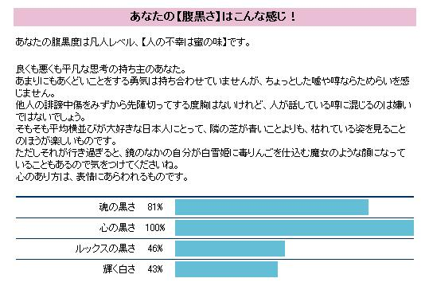

日々、想ふ
〜過去感じたことがつれづれと〜
（できるだけ最大化してお読みください）
一覧へ
銀杏祭。４/３０
懐かしいものをいろいろ見ました、タケユキです。
今日はうちの大学の春の文化祭二日目であり同時にサッカー大会でもありました。
最近俺の所属しているサッカーサークルは活動することが少なく
このサッカー大会の前にサッカーしたのが２月末、
主力メンバーの二人が欠席なのが確定、選手登録１１人ギリギリ、
当日一人寝坊、
結果、初戦が１０人対１１人の試合になる。
サッカーサークルを名乗る集団としていかがなものか。
そんな状態だったせいで
去年の秋の大会では勝った相手に２−０で惨敗。
それなのにサークルメンバーで出場してた綱引き大会では
準優勝という快挙、賞状、景品をゲット。
サークル初の賞状が綱引き大会なのは
サッカーサークルを名乗る集団としていかがなものか。
それから普通に学祭楽しんでたら、
高校の時の担任から電話がかかってきた。
うちの大学は吹田と豊中にキャンパスがあるんだけども
そのどっちの方で学祭やっとるんかって聞かれた。
盛り上がってるのは豊中だったんで「豊中です」って答えた三十分後、

制服の高校生の集団がわらわらと入ってくる入ってくる。
他の大学生はなんだこれって思っただろうけど
俺が高校生の時には関学に学校の
遠足で行ったこともあったんでピンときた。
「あ、これ遠足だ」って。
さっき電話があったことから俺はさらにピンときた。
「あ、これうちの学校だ」って。
近くに歩いてきた高校生に話しかけてみるとやっぱりそうだった。
高校の時の担任もやっぱり来てるらしい。
高校生に知り合いはいなかったんだけどもうれしくなって
後輩達に話しかけまくってたら中には強者もいて、
「先輩何か買ってくださいよ〜」
って言うから屋台の前に行って、
「おいおまえら、好きなの選べ」
話して５分もしないうちにおごってあげたりしてた。
それからさらにテンション上がっていろんな後輩
（男には声すらかけない）に話しかけては、
「おいおまえら、好きなの選べ」
の繰り返しだった。
その度に「ちゃんと担任に『
かっこいい先輩におごってもらった』って言っとけよ」
って言っといた。
中にはもうおごってやったはずなのに他のグループから紛れ込んできて
３回もおごらせたやつもいたけど
かわいかったので後輩だからよしとしよう。
それから担任と合流、けっこうな期間見てなかったけど変わってなかったね。
なぜか担任と写真を撮ってみたりもした。
もちろんその何倍も女子高生と写真も撮った。
友達のインスタントカメラで撮ったので現像が待ち遠しい。
他にも先生の持ってたカメラで撮ってもらったんだけども
そういうカメラで撮った写真って後で廊下の壁に一覧で張り出されるんじゃないっけ？
この写真欲しい人は○○番って番号書いてお金入れて提出するって感じで。
・・アホな先輩として母校にさらに印象づけてしまいそうです。
今日のカメラ：デジカメ
なくした（涙）
鯉の季節。４/２９
恋じゃないです鯉です野球の話です、タケユキです（CARP：鯉）。
春の帰省からボーリングにはまっています。
そんな頻繁にやるわけじゃない＆趣味だと言えるほど大した腕じゃないんだけども
こっち戻ってからもボーリングやってる、やってきたわけですよ。
たいていボーリングっていうのは
腕ならしで１ゲーム、本番で１ゲームの一回２ゲームくらいやるもんです、たぶん。
で今回も２ゲームでやめようと思ったんだけども
２ゲーム目が不本意な結果（といってもいつもと大して変わらん）だったんで
３ゲーム目に突入。
３ゲーム目が不本意な結果（といってもいつもと大して変わらん）だったんで
４ゲーム目に突入。
結果、筋肉痛。
明日はサッカーの試合があるのにどうしよう（筋肉痛なのは腕だけど）
明日の試合：２ヶ月ぶりのサッカー。
休んじゃった。４/２８
この日の日記更新できんかったよ、タケユキでした。
今日の言い訳：特に何があったわけではない。
呼び名。４/２７
自覚あるストーカーも珍しいもんだと思う、
ただの独り言です、タケユキです。
四月は基本的に暖かい（というか暑い）日が続いてたんだけど
今日は雨と風がすごかった、というかすごい。
あまりにすごくて途中で学校から帰ってきたくらいだ（今午前１１時）。
風が強くて途中なんども帽子が飛びそうになった。
そういえば先週帽子かぶって英語の授業受けてたら
なんか目立ってたらしく外人の先生によく当てられた、
「ヘイ、ハットガイ（hat guy）」
ハットガイて。
今日の一日：雨降ったらだるい。
適当日記。４/２６
雨降ってきました、タケユキです。
そんなわけで夜外出しようと思ったんだけども中止して
家でテレビを見てました。
久しぶりにヘイヘイヘイを見てたら
奥田民雄が出てて、なんと広島市民球場に奥田民雄の看板を出してるらしい。
まあ別に奥田民雄ファンなわけじゃないんだけども
って更新の途中ですがマンデーフットボールが始まったので
今日の日記はここでおしまい。
今日のキャンペーン：
これに応募してみよう。
腹黒度チェック。４/２５

こんな感じでした、タケユキです。
要するに中途半端な悪人だってことみたいだ。
昨日の日記で今日こそは立派に生きるって言ってたんですが
やっぱり中途半端なもんで９時過ぎには目は覚めたんだけど
結局ダラダラ過ごして早起きした意味がなし。
それからバイト行って一日おしまい。
明日こそは、本当に明日こそはまっとうに生きます。
今日の一言：たぶん俺は口だけ人間。
ダラダラダラダラ。４/２４
朝帰り、タケユキです。
そのせいで一日の始まりは午後から、
しかもダラダラしてたらすでに夕方。
「もう夕方かよ」と思いながら
それからまたダラダラしてたら夜に。
ひさびさのダメ人間ぶりに何の言葉もございません。
明日こそは、明日こそは立派に一日を生き抜きたいと思います。
今日の目標：明日は９時起き。
エマージェンシーコール（呼び出し）。４/２３
今から（午後１１時）鍋行ってきます、タケユキでした。
今日の一言：バイト休みでした。
人心掌握。４/２２
眠いです、タケユキです。
今日意味も分からずバイトで店長に怒られた。
理不尽ってこのことだと思った。
とあるお客さんと仲良くなった。
仲良くなったらお客さんが、頼んだらビールついでくれたり
料理配ったりしてくれた、人とのふれあいっていいなと思った。
まあそしたら店長に怒られたんだけども。
いいじゃんお客さん楽しそうに手伝ってくれたんだし。
今日のバイト：ぜったい俺は悪くない。
あつい。４/２１
「君の恋人は今飛行機に乗っていて、まもなく墜落するという。
彼はもうすぐ死ぬ、最後に君と話したかった。
あなたはどんな言葉をかけてあげられますか？」、タケユキです。（月９ドラマ「愛し君へ」より）
飲食系のバイトしてる人は経験あるかもしれませんが、
洗浄機にかけた食器や、スープや雑炊の入った器ってのは
たまらなく熱いんですが、
でも
忙しい時はそんなの気にするわけにもいかず
片手で一つ、両手で二ついっぺんに持たねばなりません。
それで今日７０人の宴会があって果てしなく泣きそうだったんだけど
熱くて泣きそうになりながら料理だした。
そしたらバイトの先輩が、
「まだ指の皮が厚くないからやって、
皮があつく（厚く）なったらあつく（熱く）なくなるで」
うまいって思った。
今日の俺の答え：俺も何も言えんのだろうなぁ。
買い物。４/２０
ついに６連勝でストップ、タケユキです。
今日は学校が休みになったので心斎橋、堀江に買い物に行った。
休みになったって言っても自主休講ってやつだけど。
そういうわけで預金残高が千円に。
どうあがいても貯蓄に向かない人間なのかもしれません、
明日は学校休みにできないので早く寝ます。
今日の言いたいこと：今セメの英語の授業がゆううつ。
資格。４/１９
たまには電話に出てほしい、タケユキです。
昨日は情報系の資格の試験を受けに行きました。
これからは資格の、手に職の時代なんです。
資格を持ってなきゃ食っていけない時代なんですよ。
でもなんか俺の受けた資格は持ってても
そこまで就職に有利になるわけじゃないみたいだ。
まだ受かるかわからないんだけど、ってか受からない確率の方が高いんだけど。
就職に有利になる資格はもっとハイレベルな資格らしい。
食っていくにはもっと勉強が必要です。
どこかでその俺の受けた資格についてこう書いてあった。
「まあ足の裏についた米粒のようなもの」
今日のそのこころ：とっても食えない。
風呂あがり。４/１８
カープ今日も勝って６連勝、３年ぶりの６連勝らしい。
今カープといえば「赤ゴジラ」こと背番号５５の嶋ですが、
彼の年俸もカープ選手という枠から洩れることなく低く、
「嶋の年俸×１００＝ペタジーニの年俸」という方程式が成り立ちます、
金だけで勝利は買えないんだよとどこかの新聞社と
どこかの石油会社のオーナーに言いたい、タケユキです。
住んでる大阪ではカープの試合はめったに放送されない（対阪神戦くらい）んで
ラジオで聞いたりニュースとかで結果を知ります。
今日も勝ったのを確認して風呂へ。
風呂あがりなぜかめちゃ炭酸が飲みたくなった。
風呂あがりの牛乳でもないビールでもない、炭酸。
家になかったんでわざわざ近くの自販機まで買いにまで行った。
今までこんなに飲みたくなることなんかなかったのに。
これがハタチになるってことなんだって思った。
今日の日記：たぶん違うと思う。
特に何もない一日。４/１７
部屋の完成度約８０％、タケユキです。
でもあと何が足らないかがよく分かりません。
しいて言うなら象の置き物か。
でもそういう置き物ってめちゃ高い、たいていがン万円する。
多少のオブジェを作ったりする程度の人間、
さすがに木彫りの象なんかは作れるはずがない。
しかもアジアンの象の像ってのはたいてい二足歩行系、
要するに立ってる姿だから余計に難しい。
いやまあ元から作ろうって気はさらさらないんだけど。
来週くらいから車の教習行こうかなぁ。
今日の一言：夏休みまでには免許取りたい。
さよなら未成年。４/１６
今日が誕生日なんです、タケユキです。
昨日の日記は高校の時の友達（生き物好き）が
代打日記してくれてます、ご覧あれ。
昨日はバイトがあったんで
今年の誕生日はその帰りの電車の中で迎えました。
０時ちょうどにおめでとうメールが大量に来るのを期待してたんだけど
０時ちょうどにきたのは一通だけだった。
みんなにめちゃくちゃアピールしたのに、
俺明日誕生日って言ったのに。
そんなふうに少し沈んでたらちらほらメールがきた。
そこで何通かお便り（お便り？）紹介したいと思います。
「☆☆Happy Birthday☆☆おめでと〜」
ふつうに祝ってくれるうれしいメールが何件か。
ってほとんどはそうだったんだけども。
「さらば十代」
祝ってくれてるんだろうけども遠まわしな祝い方。
もうちょっと素直に喜べっての。
「タンジョウビ オメデトウ
ハヤクカノジョ デキルトイイネ」
誰がメールで電報みたいな祝い方を喜ぶか。
でもまあなんだかんだでみんな祝ってくれたんだけど、
寝てる間にきたメールの中に一人ひどいのがいた。
「祝！イラク人質解放！」
祝は祝でも意味が違う。
こいつはちゃんと俺の誕生日覚えてたんだろうか。
それでも覚えてくれた人はいてけっこうプレゼントをもらった。
まずサランラップ、若さをずっと保っていけとのメッセージが
込められたプレゼント、
いやがらせとしか。
あとビール、そろそろチューハイとかじゃなくて
ビールを飲めるようになれって意味らしい。
決して堂々とビールを飲めるようになった
って意味じゃない。
それと少し前に気になってたマギー審司の
耳。
まさかもらうとは思わんかった。
あと同じ学科の友達がケーキ買ってくれた。

普通にめっちゃうれしかった。
おめでとうメールくれなかったことでふてくされてた自分が恥ずかしい、
いや情けない、いや人として最低、底辺だ底辺。
勝手に怒ってごめん、去年俺から
おめでとうメール送ってないのに。
おかんからは手紙が来た。
なにげに分厚い封筒だったんだけど普通の手紙だった。
出生の秘密とか明かされるんじゃないかとドキドキした自分が少しアホみたいだった。
今日の放課後：キャンパス内をチャリの空気入れ持って歩いた、恥ずかしかった。